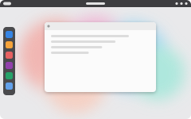
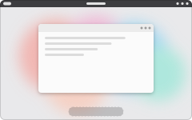
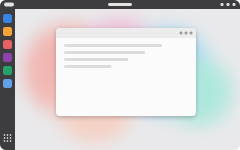
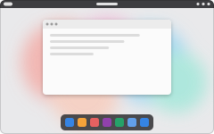
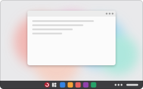
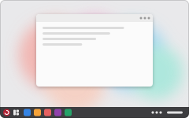

RedFox
A floating dock on big screens; the GNOME dash on small ones.

GNOME
Plain GNOME: the top bar, with the dash in the overview.

Ubuntu
A full-height dock on the left, always visible.

Cal
A floating dock along the bottom, window buttons on the left.

Wash
One taskbar along the bottom with the start menu and apps centred.

Nostalgia
One taskbar along the bottom: start menu and apps on the left.